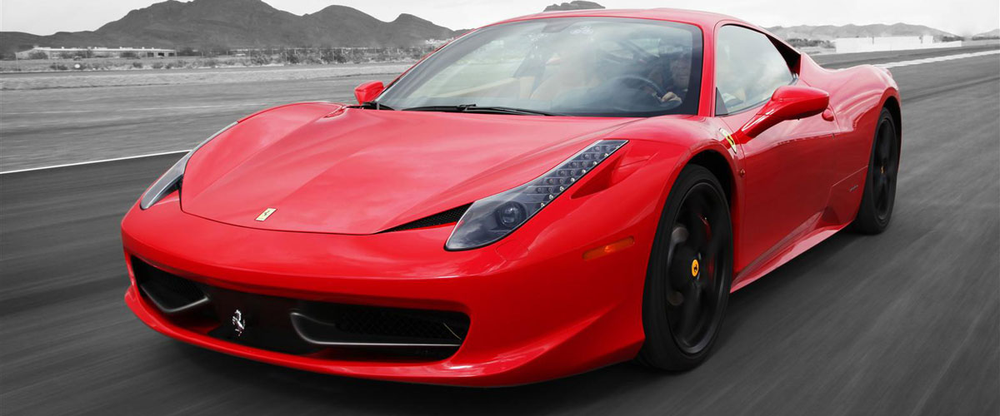
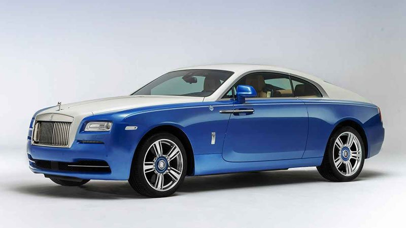
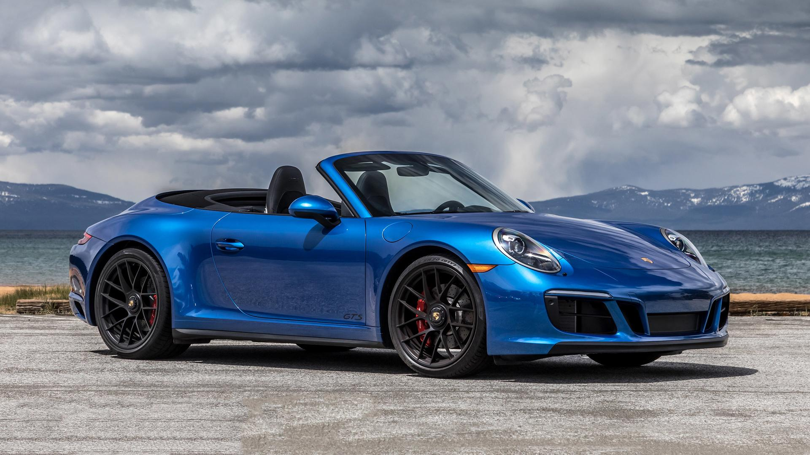
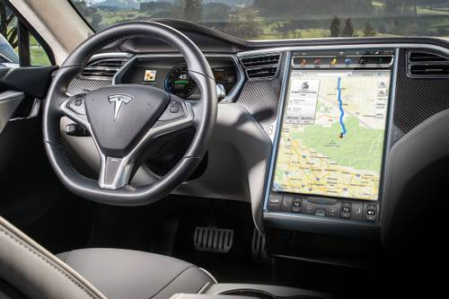

Dream Cars




Some of my dream cars shown above include a Ferrari 458 (top left), Rolls Royce Wraith (top right), Porsche 911 (bottom left), and the interior of a new tesla which includes a massive touch screen operating system. These are my favorite cars because of the amount of luxury and detail put into them. Also, many celebrities & wealthy people drive these same vehicles and it's a sense of motivation to work for the cars and enjoy the benefits of owning a super-car. Having the new features such as touch screens, and sometimes even self-driven cars, it adds lots of convenience to the driving experience. A lot of time is spent driving for the average person, therefore, acquiring a high end car that's reliable is a top priority for me.
Back to Page 1